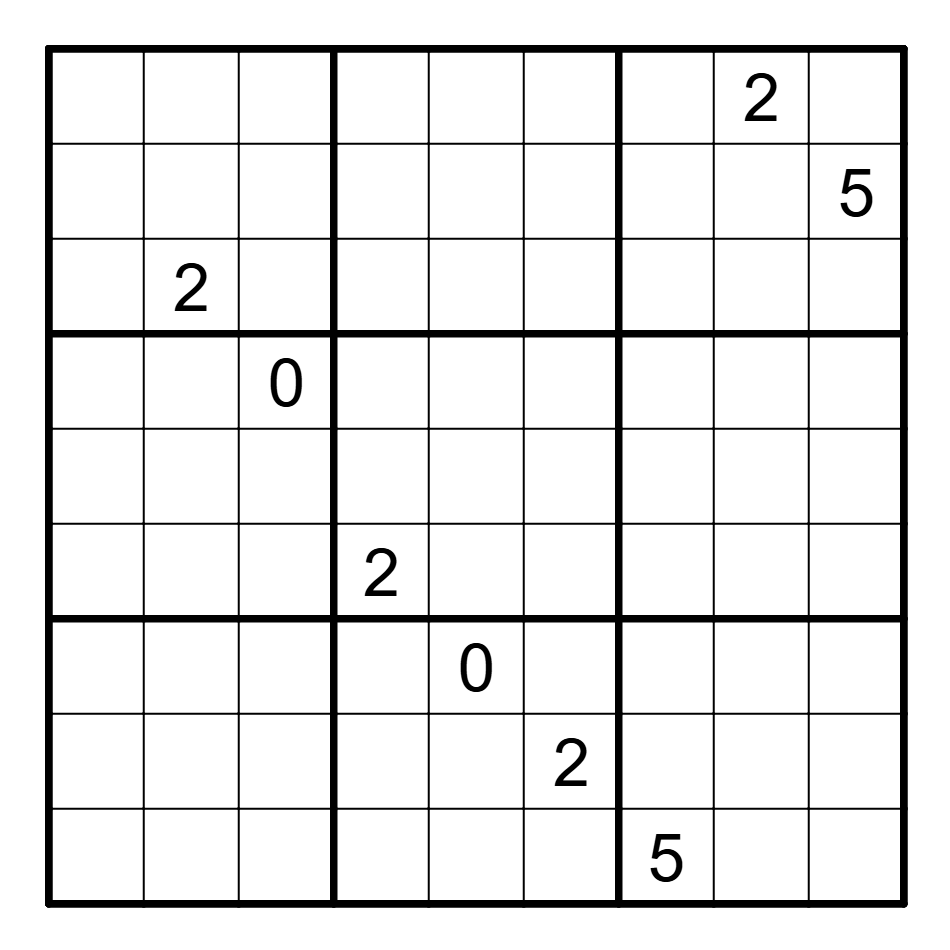

January 2025 Jane Street Puzzle
Jane Street is a quantitative trading firm that puts out monthly puzzles that normally focus on probability, programming or statistics. Last month, I tried solving one of their puzzles for the first time, and really enjoyed the process. Here’s how I attacked the somewhat square Sudoku Puzzle.
The Puzzle:
We were given us the following Sudoku board, and asked to find the unique board that maximized the greatest common divisor of the numbers spelled out by the rows. As an added twist, we were allowed to pick 9 of the 10 digits {0-9} to use to fill out the grid, which had to obey normal Sudoku rules.

In this post, I discuss my coding-based approach to solve the puzzle, which is a little different from the number-theory approach they posted on their solutions page.. If you are in a hurry, the TL;DR is that the valid solution space too slow to use brute-force on, but a branch-and-bound strategy works wonders in cutting down the amount of work you have to do so that the puzzle is solvable.
First Approach: Backtracking
The canonical computer-science way to solve a puzzle like this is via a backtracking algorithm, so much so that the wikipedia article for backtracking features a tutorial on how to use the algorithm to solve sudoku.
Briefly put, the backtracking algorithm to solve a single Sudoku board works as follows, and is extremely easy to implement.
Backtracking Algorithm:
- Iterate over spaces in the board until you find an empty space. Terminate if the board is filled.
- Place a number 0 in this space
- If this invalidates the board, try the next number. Otherwise go to step 1.
The only minor complications in our setting is that there will not be one unique solution so we will have to find all solutions and then report the one with the greatest GCD, but this is no issue. I quickly implemented this in Rust, and then waited for my computer to finish searching.
Backtracking is too slow:
Within a minute, it became clear that this solution was never going to work; the space of valid solutions is just too large to exhaustively iterate over given the limited number of tiles they give us to get started.
This failure shouldn’t be too surprising given that these puzzles have a reputation of being difficult to solve (sometimes, insanely so), so it would be odd if the most obvious solution worked.
Second Approach: Branch-and-Bound
So, where can we go from here? Listing every solution would take too much time, so maybe we should consider that we are really trying to solve an optimization problem (find the board with the greatest GCD) and see if this generates any insights.
From this perspective, we can see that when we are iterating over possible solutions, something like 99.99% of them will be pretty terrible and have a no chance of having a large GCD. For example, if just two of the rows are prime, if two of the rows are prime, then the GCD for the whole board must be one.
There must be some way that we can either prune or de-prioritize searching these boards so we can focus on promising nodes. And we can! Using a variant of the backtracking algorithm called branch-and-bound, we can use any valid upper bound on the GCD given a partial board state to drastically speed up the search:
Branch and Bound Algorithm
- Iterate over spaces in the board until you find an empty space. Terminate if the board is filled.
- Place a number 0 in this space. If this invalidates the board, replace zero with the next number until you find one that works.
- Calculate an upper bound for the GCD of the board as it has been filled so far. If this is lower than the best board you have found so far, return to step 2 and try the next number. If it is the upper bound is greater than the best board so far, go to step 1.
You could likely use the prime trick I suggested above to speed up the search, but I used the fact that if we have two sets of numbers and one is a subset of the other, the GCD of the superset set must be smaller than the GCD of the subset. Put formally:
\[\mathbb{A} \subset \mathbb{B} \Rightarrow gcd(\mathbb{A}) > gcd(\mathbb{B})\]
Thus, if we see a board that has any filled in rows, the GCD of these rows acts as an upper bound on the GCD of the board after it has been filled in. Whenever we fill in a new row in a potential solution, we can check if the board can have a GCD larger than the best GCD we have seen so far. If it cannot, we can skip this board and all other boards that have the same rows, drastically speeding up our search by over 99%. Importantly, if we fill in the board in ‘reading order’ (completing the top row first, then the next row and so on), we complete rows in the fastest order, maximizing our opportunity to prune bad paths early and thus our time savings.
This solution worked extremely well! I was able to find the solution in just a few minutes, and most of that was because I did not bother to share the best board state between different threads that were searching in parallel, leading to some inefficiencies and a dangling thread. You can find my implementation of below, but the code is a little messy as I was working quickly.
Rust Code:
Final Thoughts:
Overall, I loved this puzzle. I am not sure if I understand the intended solution, but I really enjoyed the process of programming the backtracking algorithm and then thinking of ways to speed up the search until I realized I could use the GCD bound I described to branch-and-bound. I am very interested to see in the next few days if people solved the puzzle in other ways or using other, more efficient bounds - please reach out to me if you did!